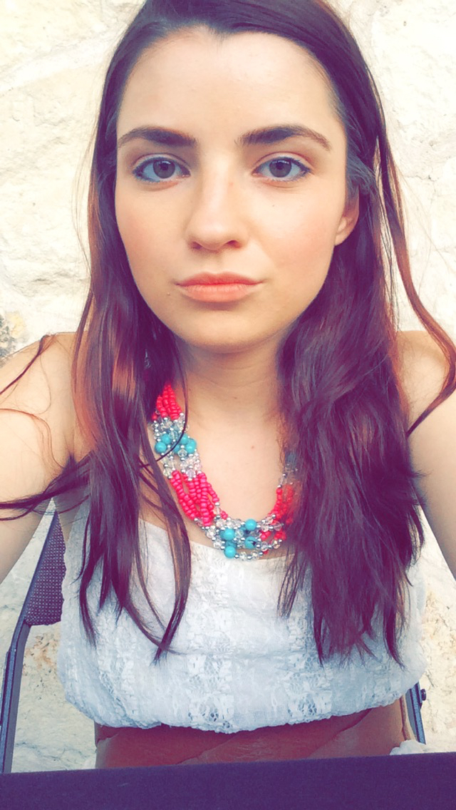

Kayleigh's Page

Kayleigh
LinkedIn: myrikay
E D U C A T I O N
- Texas State University – San Marcos Fall 2011 – Fall 2015
- Biology Major
- Math Minor
E X P E R I E N C E
- Goodshop – Software Engineering Intern (February 2017 – May 2017)
- Goodshop – Customer Service (October 2016 – December 2016)
- Manpower – Temp Administrative Assistant (May 2016 – July 2016)
L A N G U A G E S
- HTML: used at internship while transferring e-mail templates from SendGrid to Cordial
- SMARTY: used at internship while adjusting e-mail variables to Cordial
- CSS: worked on re-styling company web pages at internship
- Ruby on Rails: used to setup e-mail automation through Cordial
- jQuery: used to navigate web pages while going over production bugs
- Python: personal study
- JavaScript: personal study